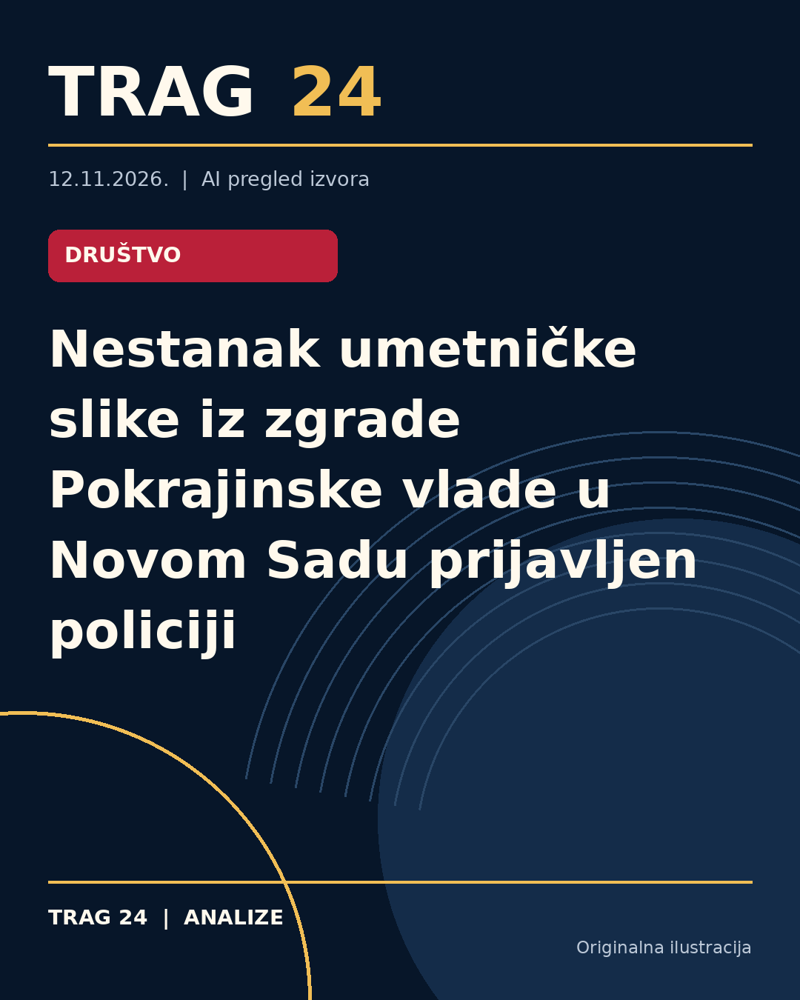

Nestanak umetničke slike iz zgrade Pokrajinske vlade u Novom Sadu prijavljen policiji

ŠTA SE DOGODILO
Iz zgrade Pokrajinske vlade u Novom Sadu nestala je umetnička slika. O ovom događaju obaveštena je policija, koja je slučaj prijavila Osnovnom javnom tužilaštvu.
HRONOLOGIJA
Nestanak slike prijavljen je Policijskoj upravi Novi Sad 10. novembra, istog dana kada su mediji uputili pitanja policiji i Pokrajinskoj vladi vezano za ovaj slučaj. Nije poznato da li je prijava podneta pre ili posle novinarskog obraćanja.
ŠTA NAVODE IZVORI
Policijska uprava Novi Sad je potvrdila da je slučaj prijavljen i da će po nalogu tužilaštva biti dostavljen izveštaj o događaju. Portal 'Moj Novi Sad' prenosi da je reč o vrednom umetničkom delu, ali njegova vrednost i autor nisu zvanično utvrđeni. Takođe, nije utvrđeno da li je delo ukradeno, uništeno ili uklonjeno na neki drugi način. Prema podacima iz 2021. godine, Pokrajinska vlada poseduje bogatu kolekciju umetničkih dela, među kojima su radovi značajnih umetnika.
ŠTA JE POTVRĐENO
Potvrđeno je da je umetnička slika nestala iz zgrade Pokrajinske vlade i da je o tome obaveštena policija i Osnovno javno tužilaštvo. Sve tri nezavisne redakcije prenose iste informacije dobijene od policije i portala 'Moj Novi Sad'.
ŠTA NIJE POTVRĐENO
Nije potvrđeno ko je autor nestale slike, kolika je njena tačna vrednost niti na koji konkretan način je slika nestala, odnosno da li je ukradena, uništena ili uklonjena iz zgrade. Takođe nije poznato da li je prijava o nestanku slike podneta pre ili nakon upita novinara.
ŠTA OSTАJE OTVORENO: Ostaje nejasno gde i pod kojim okolnostima je slika nestala, kao i ko je potencijalno odgovoran za nestanak. Nije poznato ni da li postoji dalji napredak u istrazi niti eventualni planovi za pronalazak slike.
Izvori
- https://nova.rs/vesti/hronika/iz-zgrade-pokrajinske-vlade-u-novom-sadu-nestala-umetnicka-slika/
- https://n1info.rs/vesti/portal-iz-zgrade-pokrajinske-vlade-u-novom-sadu-nestala-umetnicka-slika/
- https://www.danas.rs/vesti/politika/portal-iz-zgrade-pokrajinske-vlade-u-novom-sadu-nestala-umetnicka-slika/
Ova analiza je pripremljena uz pomoć veštačke inteligencije na osnovu javno dostupnih izvora. Navodi izvora nisu nužno nezavisno potvrđeni.